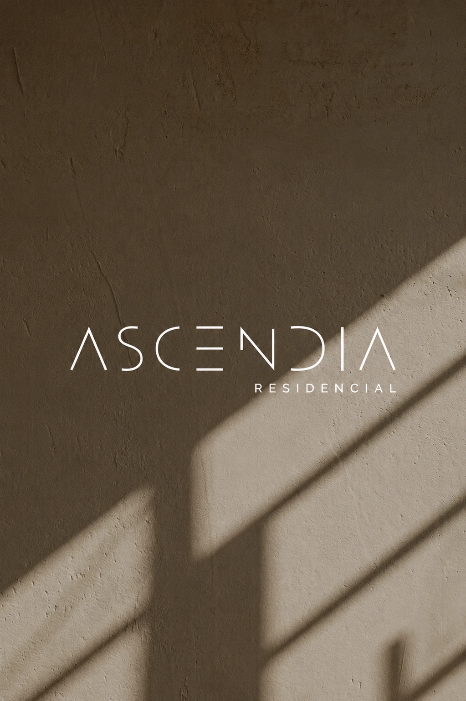
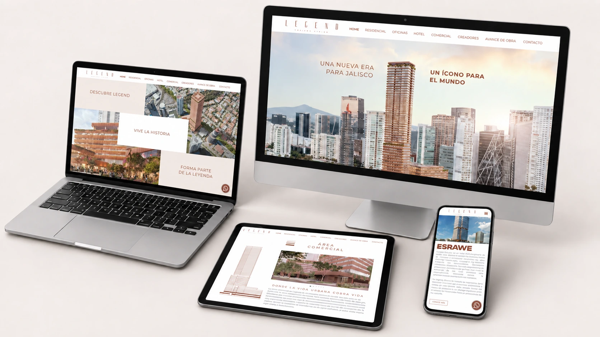
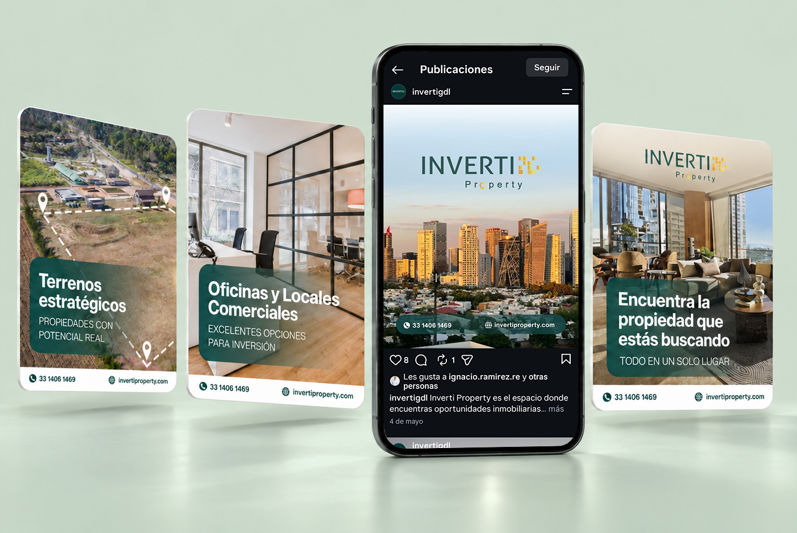
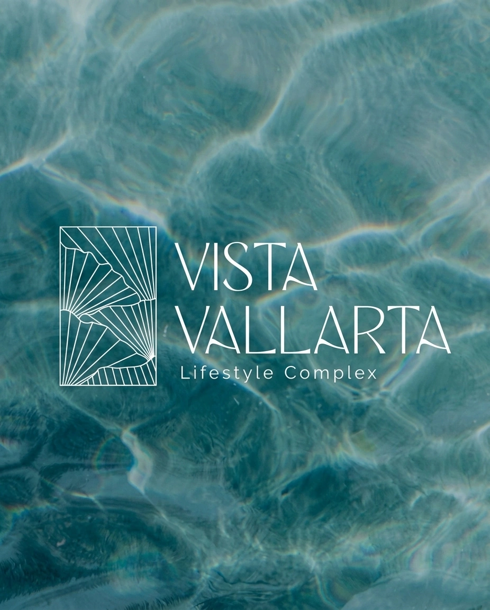
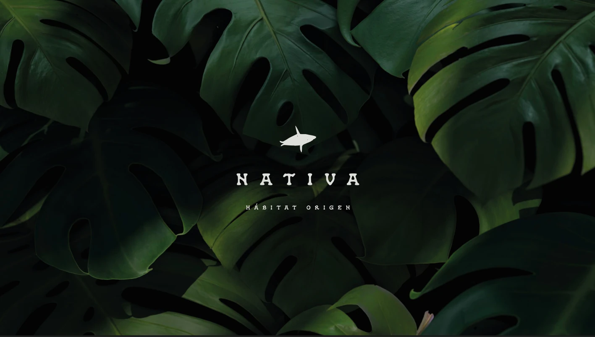

Una colección de branding, proyectos web y experiencias digitales creadas con estrategia y propósito.

Identidad de marca

Diseño Web

Diseño de Campaña Digital

Diseño de Branding

branding y redes sociales
Haz clic en una imagen para descubrir el proyecto
Proyecto seleccionado